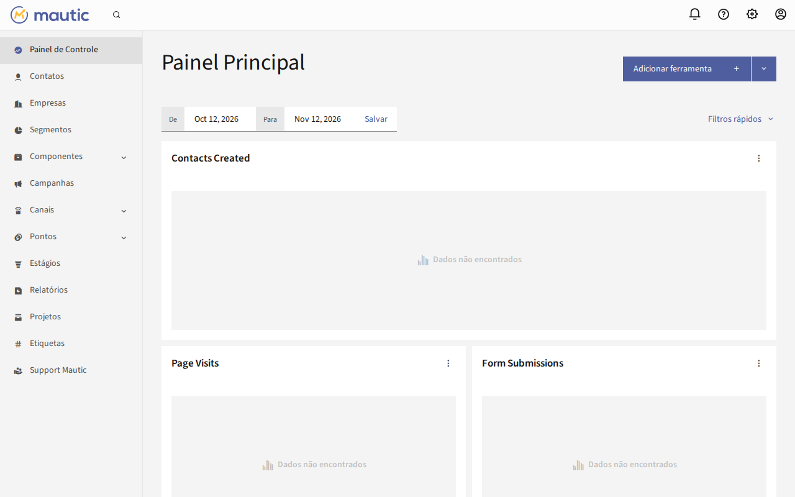
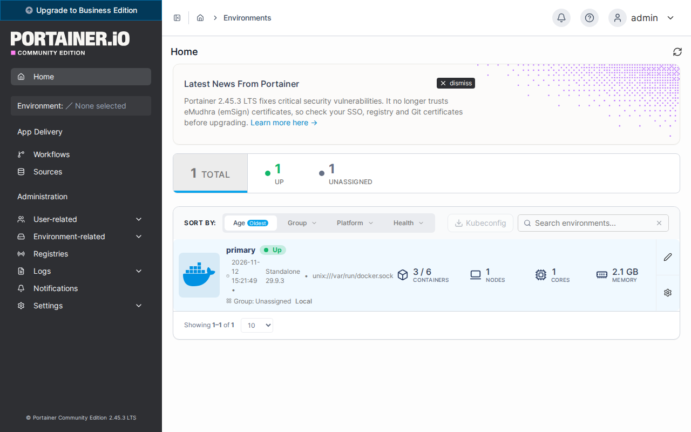
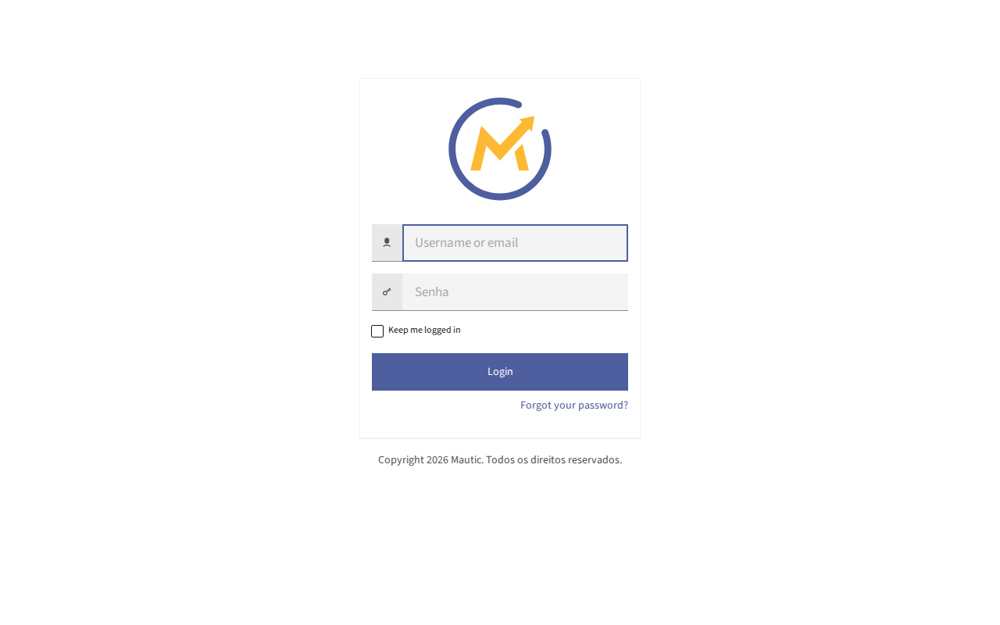

<!doctype html>
<html lang="pt-BR">
<head>
<meta charset="utf-8">
<meta name="viewport" content="width=device-width, initial-scale=1">
<title>Ensaio do teste final</title>
<style>
  body { margin: 0; padding: 24px 16px 48px; background: #f4f2ee; font-family: system-ui, sans-serif; color: #26221c; }
  main { max-width: 780px; margin: 0 auto; }
  h1 { font-size: 22px; font-weight: 600; margin: 0 0 6px; }
  h2 { font-size: 16px; font-weight: 600; margin: 32px 0 4px; }
  p { font-size: 14px; line-height: 1.5; margin: 0 0 12px; color: #5f5a52; }
  .terminal { background: #0c0c0c; color: #cccccc; border-radius: 8px; padding: 14px 10px; overflow-x: auto; }
  pre { margin: 0; font-family: "Cascadia Mono", Consolas, "DejaVu Sans Mono", monospace; font-size: 12.5px; line-height: 1.25; white-space: pre; }
  img { display: block; max-width: 100%; border: 1px solid #d9d4ca; border-radius: 8px; }
</style>
</head>
<body>
<main>
<h1>Ensaio do teste final</h1>
<p>Capturas de um terminal de verdade, de 80 colunas, numa VPS de teste, em 12/11/2026: instalação do zero pelo menu, com domínio e certificado de verdade. O domínio e o IP da máquina foram trocados por exemplos, e as senhas foram ocultadas; na tela de verdade a senha aparece.</p>
<h2>A primeira tela do menu</h2>
<p>O cabeçalho é o geral, &quot;Play Ahead Installer&quot;. A lista sai dos instaladores embutidos, e &quot;instalado&quot; aparece ao lado do que já existe na máquina. Aqui o menu foi aberto numa máquina que já tinha os dois.</p>
<div class="terminal"><pre>  <span style="color:#af5fff">────────────────────────────────────────────────────────────────────</span>

   <span style="color:#af5fff">█▀█ █   █▀█ █ █   █▀█ █ █ █▀▀ █▀█ █▀▄</span>
   <span style="color:#af5fff">█▀▀ █   █▀█ ▀█▀   █▀█ █▀█ █▀▀ █▀█ █ █</span>
   <span style="color:#af5fff">▀   ▀▀▀ ▀ ▀  ▀    ▀ ▀ ▀ ▀ ▀▀▀ ▀ ▀ ▀▀</span>

   <span style="font-weight:700;color:#ffffff">Play Ahead Installer</span>                                  <span style="color:#8a8a8a">versão 0.1.0</span>
  <span style="color:#af5fff">────────────────────────────────────────────────────────────────────</span>
   <span style="color:#8a8a8a">playahead.com.br   Licença MIT. Consulte o arquivo LICENSE.</span>

   (aqui entra o aviso legal)

   Os instaladores vêm dentro deste arquivo. Nada é baixado.
     <span style="color:#8a8a8a">São 14909 linhas no total.</span>

   Para ler antes de rodar, cada um começa em:
     <span style="color:#8a8a8a">base.sh      linha 1962</span>
     <span style="color:#8a8a8a">mautic7.sh   linha 7647</span>

   No less, digite dois-pontos, o número e Enter para pular.

   <span style="color:#af5fff"></span><span style="font-weight:700;color:#ffffff">Instaladores</span>
  <span style="color:#8a8a8a">────────────────────────────────────────────────────────────────────</span>
   <span style="color:#af5fff">1</span>  <span style="font-weight:700;color:#ffffff">Base</span>       instalado   <span style="color:#8a8a8a">Docker, Traefik e Portainer. Uma vez por VPS.</span>
   <span style="color:#af5fff">2</span>  <span style="font-weight:700;color:#ffffff">Mautic 7</span>   instalado   <span style="color:#8a8a8a">Precisa da base instalada.</span>
   <span style="color:#af5fff">0</span>  Sair
  <span style="color:#8a8a8a">────────────────────────────────────────────────────────────────────</span>
     <span style="color:#8a8a8a">Para só gravar os instaladores e ler antes: --extrair</span>

   Número da opção: 0

   Nada foi alterado nesta máquina.</pre></div>
<h2>Ctrl-C numa pergunta</h2>
<p>A base perguntou o e-mail e recebeu Ctrl-C. Ela diz que nada foi alterado, o menu avisa e volta para a lista.</p>
<div class="terminal"><pre>   <span style="color:#af5fff">[3/7] </span><span style="font-weight:700;color:#ffffff">Algumas perguntas antes de começar</span><span style="color:#8a8a8a"></span>
   Depois daqui a instalação corre sozinha até o fim.

   O Let&#x27;s Encrypt pede um e-mail para avisar sobre a
   renovação do certificado. Ele vai para a Let&#x27;s Encrypt,
   não para a Play Ahead.
   E-mail para o certificado SSL: ^C
   <span style="color:#e74856;font-weight:700">✗</span> Interrompido (Ctrl-C) em: Algumas perguntas antes de começar
     <span style="color:#8a8a8a">Nada foi alterado nesta máquina ainda.</span>
     <span style="color:#8a8a8a">Rode de novo quando quiser.</span>

  <span style="color:#8a8a8a">────────────────────────────────────────────────────────────────────</span>
   <span style="color:#d7ba00">!</span> base.sh foi interrompido (Ctrl-C).
     <span style="color:#8a8a8a">O que já tinha sido feito continua feito; o instalador</span>
     <span style="color:#8a8a8a">não desfaz nada. Rodar de novo retoma de onde dá.</span>

   <span style="color:#af5fff"></span><span style="font-weight:700;color:#ffffff">Instaladores</span>
  <span style="color:#8a8a8a">────────────────────────────────────────────────────────────────────</span>
   <span style="color:#af5fff">1</span>  <span style="font-weight:700;color:#ffffff">Base</span>       <span style="color:#8a8a8a">Docker, Traefik e Portainer. Uma vez por VPS.</span>
   <span style="color:#af5fff">2</span>  <span style="font-weight:700;color:#ffffff">Mautic 7</span>   <span style="color:#8a8a8a">Precisa da base instalada.</span>
   <span style="color:#af5fff">0</span>  Sair
  <span style="color:#8a8a8a">────────────────────────────────────────────────────────────────────</span>
     <span style="color:#8a8a8a">Para só gravar os instaladores e ler antes: --extrair</span>

   Número da opção: 1</pre></div>
<h2>Base: a confirmação e o fim</h2>
<p>A marca &gt; aparece só no que veio de quem instala. O quadro final fica entre duas linhas.</p>
<div class="terminal"><pre>   <span style="color:#af5fff">[4/7] </span><span style="font-weight:700;color:#ffffff">Confira antes de começar</span><span style="color:#8a8a8a"></span>
     Swap                criar 2 GB (RAM de 1967 MB)
     Docker e Compose    instalar
     Traefik             instalar v3.7.16
   &gt; E-mail do SSL       <span style="font-weight:700;color:#ffffff">ci@playahead.com.br</span>
   &gt; Portainer           <span style="font-weight:700;color:#ffffff">https://painel.exemplo.com.br</span>

     <span style="color:#8a8a8a">&gt; veio de você. Confira estes com atenção.</span>

   Posso começar? <span style="color:#8a8a8a">[S/n]</span>: 

   <span style="color:#af5fff">[5/7] </span><span style="font-weight:700;color:#ffffff">Preparando a máquina</span><span style="color:#8a8a8a"></span>
   <span style="color:#af5fff">›</span> <span style="font-weight:700;color:#ffffff">Criando swap de 2 GB</span>
     <span style="color:#8a8a8a">Esta máquina tem 1967 MB de RAM e nenhum swap.</span>
     <span style="color:#8a8a8a">Sem swap, o Mautic corre risco de ser encerrado pelo</span>
     <span style="color:#8a8a8a">sistema no meio da instalação, sem mensagem de erro.</span>
     <span style="color:#8a8a8a">Registrado no /etc/fstab, para sobreviver a reboot.</span>
   <span style="color:#3fb950">✓</span> Swap de 2 GB ativo em /swapfile
   <span style="color:#af5fff">›</span> <span style="font-weight:700;color:#ffffff">Instalando o Docker</span>
   Atualizando a lista de pacotes
   Instalando pré-requisitos
   Adicionando a chave e o repositório oficiais do Docker
   <span style="color:#3fb950">✓</span> Chave do repositório do Docker conferida
   Atualizando a lista com o repositório do Docker
   Instalando Docker e o plugin do Compose
   Aguardando o daemon do Docker 
   <span style="color:#3fb950">✓</span> Aguardando o daemon do Docker: pronto em 0s
   <span style="color:#3fb950">✓</span> Docker 29.9.3, Compose 5.7.1
   <span style="color:#af5fff">›</span> <span style="font-weight:700;color:#ffffff">Instalando o Traefik v3.7.16</span>
   <span style="color:#3fb950">✓</span> Rede traefik_public criada
   <span style="color:#3fb950">✓</span> Compose gravado em /opt/playahead/traefik/docker-compose.yml
   <span style="color:#3fb950">✓</span> .env gravado, com o e-mail do Let&#x27;s Encrypt
   Subindo o Traefik
   Aguardando o Traefik ocupar as portas 80 e 443 
   <span style="color:#3fb950">✓</span> Aguardando o Traefik ocupar as portas 80 e 443: pronto em 0s
   <span style="color:#3fb950">✓</span> Traefik v3.7.16 no ar

   <span style="color:#af5fff">[6/7] </span><span style="font-weight:700;color:#ffffff">Portainer</span><span style="color:#8a8a8a"></span>
   <span style="color:#3fb950">✓</span> Senha do admin do Portainer gerada
   <span style="color:#3fb950">✓</span> Compose gravado em /opt/playahead/portainer/docker-compose.yml
   Subindo o Portainer 2.45.3
   Aguardando o Portainer responder 
   <span style="color:#3fb950">✓</span> Aguardando o Portainer responder: pronto em 0s
   <span style="color:#3fb950">✓</span> Portainer 2.45.3 no ar
   <span style="color:#3fb950">✓</span> Credenciais gravadas em /opt/playahead/portainer/credenciais.txt
   <span style="color:#af5fff">›</span> <span style="font-weight:700;color:#ffffff">Conferindo se o domínio abre o Portainer</span>
   <span style="color:#3fb950">✓</span> O domínio abre o Portainer
   Conferindo o certificado de painel.exemplo.com.br ..
   <span style="color:#3fb950">✓</span> Conferindo o certificado de painel.exemplo.com.br: pronto em 6s

   <span style="color:#af5fff">[7/7] </span><span style="font-weight:700;color:#ffffff">Base pronta</span><span style="color:#8a8a8a"></span>

  <span style="color:#af5fff">────────────────────────────────────────────────────────────────────</span>

   <span style="font-weight:700;color:#ffffff">A infraestrutura compartilhada está no ar</span>

   Docker          <span style="font-weight:700;color:#ffffff">29.9.3</span>
   Compose         <span style="font-weight:700;color:#ffffff">5.7.1</span>
   Rede do proxy   <span style="font-weight:700;color:#ffffff">traefik_public</span>
   Entrypoint      <span style="font-weight:700;color:#ffffff">websecure</span>
   Certresolver    <span style="font-weight:700;color:#ffffff">letsencrypt</span>

  <span style="color:#af5fff">────────────────────────────────────────────────────────────────────</span>

   Um arquivo de swap de 2 GB foi criado em /swapfile
   porque esta máquina tem pouca memória.

  <span style="color:#af5fff">────────────────────────────────────────────────────────────────────</span>

   <span style="font-weight:700;color:#ffffff">Portainer</span>

   Endereço   <span style="font-weight:700;color:#ffffff">https://painel.exemplo.com.br</span>
   Usuário    <span style="font-weight:700;color:#ffffff">admin</span>
   Senha      (oculta)

   Guardado em /opt/playahead/portainer/credenciais.txt

  <span style="color:#af5fff">────────────────────────────────────────────────────────────────────</span>

   Quem entra no Portainer controla todos os containers
   desta máquina. Guarde a senha num gerenciador de senhas.
   Se preferir trocar a senha do Portainer, use outra igualmente
   forte, em Minha conta (My account, no menu do usuário).

   A conferência do endereço rodou de dentro desta VPS e não
   passa pelo firewall do provedor. Abra no navegador para ter
   certeza: https://painel.exemplo.com.br

   Agora instale as ferramentas que quiser. O menu volta
   em seguida: escolha a próxima por lá.

   Quer receber avisos de novas versões, correções e conteúdos
   da Play Ahead sobre automação de marketing?
     <span style="color:#8a8a8a">https://playahead.com.br/avisos</span>

  <span style="color:#8a8a8a">────────────────────────────────────────────────────────────────────</span>
   <span style="color:#3fb950">✓</span> base.sh terminou.

   <span style="color:#af5fff"></span><span style="font-weight:700;color:#ffffff">Instaladores</span>
  <span style="color:#8a8a8a">────────────────────────────────────────────────────────────────────</span>
   <span style="color:#af5fff">1</span>  <span style="font-weight:700;color:#ffffff">Base</span>       instalado   <span style="color:#8a8a8a">Docker, Traefik e Portainer. Uma vez por VPS.</span>
   <span style="color:#af5fff">2</span>  <span style="font-weight:700;color:#ffffff">Mautic 7</span>               <span style="color:#8a8a8a">Precisa da base instalada.</span>
   <span style="color:#af5fff">0</span>  Sair
  <span style="color:#8a8a8a">────────────────────────────────────────────────────────────────────</span>
     <span style="color:#8a8a8a">Para só gravar os instaladores e ler antes: --extrair</span>

   Número da opção: 0</pre></div>
<h2>A pergunta de versão</h2>
<p>Feita com uma cópia do instalador em que a recomendada era a 7.2.1, para a 7.2.2 aparecer como mais nova. Enter fica na recomendada, e o &quot;não&quot; no fim não cria nada.</p>
<div class="terminal"><pre>   Consultando o Docker Hub (hub.docker.com) para ver se há Mautic 7
   mais novo que o 7.2.1, a versão testada pela Play Ahead.
     <span style="color:#8a8a8a">Só lê a lista pública de versões; nada desta máquina é enviado.</span>

   Qual versão do Mautic instalar?
     <span style="color:#af5fff">1</span>  Recomendada: Mautic 7.2.1, testada pela Play Ahead
     <span style="color:#af5fff">2</span>  Mais nova: Mautic 7.2.2, sem teste, por sua conta
   Número da opção <span style="color:#8a8a8a">[1]</span>: 
   <span style="color:#3fb950">✓</span> Fica a versão recomendada, 7.2.1
     <span style="color:#8a8a8a">Existe a 7.2.2, ainda sem teste da Play Ahead.</span>

   <span style="color:#af5fff">[4/8] </span><span style="font-weight:700;color:#ffffff">Conferindo o domínio</span><span style="color:#8a8a8a"></span>
     <span style="color:#8a8a8a">IP público desta máquina: 203.0.113.10</span>
   <span style="color:#3fb950">✓</span> DNS de mautic.exemplo.com.br aponta para esta VPS

   <span style="color:#af5fff">[5/8] </span><span style="font-weight:700;color:#ffffff">Confira antes de começar</span><span style="color:#8a8a8a"></span>
     Situação            instalação nova
   &gt; Domínio             <span style="font-weight:700;color:#ffffff">https://mautic.exemplo.com.br</span>
   &gt; E-mail do admin     <span style="font-weight:700;color:#ffffff">ci@playahead.com.br</span>
     Mautic              7.2.1 (recomendada, testada pela Play Ahead)
     DNS                 aponta para esta VPS
     Rede do Traefik     traefik_public
     Entrypoint          websecure
     Certresolver        letsencrypt
     Idioma              pt_BR
     Fuso horário        America/Sao_Paulo
     Pasta               /opt/playahead/mautic
     Conclusão           concluir pela linha de comando

     <span style="color:#8a8a8a">&gt; veio de você. Confira estes com atenção.</span>

   Posso começar? <span style="color:#8a8a8a">[S/n]</span>: n

   Nada foi alterado nesta máquina.</pre></div>
<h2>Mautic: a confirmação</h2>
<p>O resumo do que vai ser feito, antes de qualquer alteração.</p>
<div class="terminal"><pre>   <span style="color:#af5fff">[5/8] </span><span style="font-weight:700;color:#ffffff">Confira antes de começar</span><span style="color:#8a8a8a"></span>
     Situação            instalação nova
   &gt; Domínio             <span style="font-weight:700;color:#ffffff">https://mautic.exemplo.com.br</span>
   &gt; E-mail do admin     <span style="font-weight:700;color:#ffffff">ci@playahead.com.br</span>
     Mautic              7.2.2 (recomendada, testada pela Play Ahead)
     DNS                 aponta para esta VPS
     Rede do Traefik     traefik_public
     Entrypoint          websecure
     Certresolver        letsencrypt
     Idioma              pt_BR
     Fuso horário        America/Sao_Paulo
     Pasta               /opt/playahead/mautic
     Conclusão           concluir pela linha de comando

     <span style="color:#8a8a8a">&gt; veio de você. Confira estes com atenção.</span>

   Posso começar? <span style="color:#8a8a8a">[S/n]</span>: </pre></div>
<h2>Mautic: as últimas etapas e o fim</h2>
<p>A conferência do endereço, do certificado e do cookie, e o quadro com o endereço, o e-mail e a senha.</p>
<div class="terminal"><pre>   <span style="color:#af5fff">[7/8] </span><span style="font-weight:700;color:#ffffff">Conferindo o endereço</span><span style="color:#8a8a8a"></span>
   <span style="color:#af5fff">›</span> <span style="font-weight:700;color:#ffffff">Conferindo se o domínio abre o Mautic</span>
   <span style="color:#3fb950">✓</span> O domínio abre o Mautic
     <span style="color:#8a8a8a">terminou em https://mautic.exemplo.com.br/s/login, com 200</span>
     <span style="color:#8a8a8a">depois de 2 redirecionamento(s)</span>
   Conferindo o certificado de mautic.exemplo.com.br .
   <span style="color:#3fb950">✓</span> Conferindo o certificado de mautic.exemplo.com.br: pronto em 3s
   <span style="color:#3fb950">✓</span> O cookie de login sai marcado como seguro

   <span style="color:#af5fff">[8/8] </span><span style="font-weight:700;color:#ffffff">Pronto</span><span style="color:#8a8a8a"></span>

  <span style="color:#af5fff">────────────────────────────────────────────────────────────────────</span>

   <span style="font-weight:700;color:#ffffff">Mautic instalado e no ar</span>

   Endereço   <span style="font-weight:700;color:#ffffff">https://mautic.exemplo.com.br</span>
   Versão     <span style="font-weight:700;color:#ffffff">Mautic 7.2.2 (recomendada, testada pela Play Ahead)</span>
   E-mail     <span style="font-weight:700;color:#ffffff">ci@playahead.com.br</span>
   Senha      (oculta)

   Guardado em /opt/playahead/mautic/credenciais.txt

  <span style="color:#af5fff">────────────────────────────────────────────────────────────────────</span>

   Guarde num gerenciador de senhas. O arquivo não é apagado.
   Arquivos da instalação: /opt/playahead/mautic

   A conferência do endereço rodou de dentro desta VPS e não
   passa pelo firewall do provedor. Abra no navegador para ter
   certeza: https://mautic.exemplo.com.br

   <span style="color:#d7ba00">!</span> A porta 587 está bloqueada nesta VPS.
     <span style="color:#8a8a8a">No Amazon SES, configure a porta 2587 no painel.</span>
     <span style="color:#8a8a8a">Detalhes em /opt/playahead/mautic/credenciais.txt.</span>

   Quer receber avisos de novas versões, correções e conteúdos
   da Play Ahead sobre automação de marketing?
     <span style="color:#8a8a8a">https://playahead.com.br/avisos</span>

  <span style="color:#8a8a8a">────────────────────────────────────────────────────────────────────</span>
   <span style="color:#3fb950">✓</span> mautic7.sh terminou.

   <span style="color:#af5fff"></span><span style="font-weight:700;color:#ffffff">Instaladores</span>
  <span style="color:#8a8a8a">────────────────────────────────────────────────────────────────────</span>
   <span style="color:#af5fff">1</span>  <span style="font-weight:700;color:#ffffff">Base</span>       instalado   <span style="color:#8a8a8a">Docker, Traefik e Portainer. Uma vez por VPS.</span>
   <span style="color:#af5fff">2</span>  <span style="font-weight:700;color:#ffffff">Mautic 7</span>   instalado   <span style="color:#8a8a8a">Precisa da base instalada.</span>
   <span style="color:#af5fff">0</span>  Sair
  <span style="color:#8a8a8a">────────────────────────────────────────────────────────────────────</span>
     <span style="color:#8a8a8a">Para só gravar os instaladores e ler antes: --extrair</span>

   Número da opção: 0</pre></div>
<h2>Menu de novo: o Mautic já instalado</h2>
<p>Escolher o Mautic numa máquina que já o tem não reinstala nada.</p>
<div class="terminal"><pre>   <span style="color:#af5fff">[2/8] </span><span style="font-weight:700;color:#ffffff">Conferindo a base</span><span style="color:#8a8a8a"></span>
   <span style="color:#3fb950">✓</span> Traefik encontrado: traefik-traefik-1
   <span style="color:#3fb950">✓</span> Base pronta: Docker 29.9.3, Compose 5.7.1
     <span style="color:#8a8a8a">Traefik encontrado em traefik-traefik-1.</span>

   <span style="color:#af5fff"></span><span style="font-weight:700;color:#ffffff">Instalação encontrada</span>
  <span style="color:#8a8a8a">────────────────────────────────────────────────────────────────────</span>
   <span style="color:#3fb950">✓</span> Já existe uma instalação completa em /opt/playahead/mautic

   Nada será reinstalado e nada será apagado.

   Para reiniciar a stack:
     <span style="color:#8a8a8a">cd /opt/playahead/mautic &amp;&amp; docker compose up -d</span>

   As credenciais estão em:
     <span style="color:#8a8a8a">/opt/playahead/mautic/credenciais.txt</span>

   Para levar este Mautic à versão recomendada deste
   instalador, com backup antes:
     <span style="color:#8a8a8a">sudo bash ./mautic7.sh --atualizar</span>

  <span style="color:#8a8a8a">────────────────────────────────────────────────────────────────────</span>
   <span style="color:#3fb950">✓</span> mautic7.sh terminou.</pre></div>
<h2>Menu de novo: a base já instalada</h2>
<p>Tela capturada no mesmo dia, depois da mudança que o ensaio motivou. Com o Portainer no ar, a base não pergunta o subdomínio outra vez: diz que ele foi encontrado e o mantém. Nenhum container foi recriado.</p>
<div class="terminal"><pre>   <span style="color:#af5fff">[2/7] </span><span style="font-weight:700;color:#ffffff">Descobrindo a situação desta máquina</span><span style="color:#8a8a8a"></span>
   <span style="color:#3fb950">✓</span> Traefik encontrado: traefik-traefik-1
   <span style="color:#3fb950">✓</span> Já existe um proxy Traefik nesta máquina
     <span style="color:#8a8a8a">Ele será reaproveitado; nada da configuração dele será tocado.</span>

   <span style="color:#af5fff"></span><span style="font-weight:700;color:#ffffff">O que encontrei no Traefik desta máquina</span>
  <span style="color:#8a8a8a">────────────────────────────────────────────────────────────────────</span>
   ITEM             VALOR                    ORIGEM
   rede             traefik_public           redes do container
   entrypoint       websecure                flags de linha de comando
   certresolver     letsencrypt              flags de linha de comando

   <span style="color:#3fb950">✓</span> Já existe um Portainer nesta máquina
     <span style="color:#8a8a8a">Instalado por esta base, em https://painel.exemplo.com.br</span>
     <span style="color:#8a8a8a">Ele será mantido como está; nada dele será tocado.</span>

   <span style="color:#af5fff">[3/7] </span><span style="font-weight:700;color:#ffffff">Algumas perguntas antes de começar</span><span style="color:#8a8a8a"></span>
   Nada a perguntar desta vez.

   <span style="color:#af5fff">[4/7] </span><span style="font-weight:700;color:#ffffff">Confira antes de começar</span><span style="color:#8a8a8a"></span>
     Swap                já existe, manter
     Docker e Compose    reaproveitar 29.9.3
     Traefik             reaproveitar o que já está no ar
     Portainer           manter o que já está no ar

   Posso começar? <span style="color:#8a8a8a">[S/n]</span>: 

   <span style="color:#af5fff">[5/7] </span><span style="font-weight:700;color:#ffffff">Preparando a máquina</span><span style="color:#8a8a8a"></span>
   <span style="color:#3fb950">✓</span> Swap já ativo nesta máquina
   <span style="color:#3fb950">✓</span> Docker 29.9.3 e Compose 5.7.1 já instalados
   <span style="color:#3fb950">✓</span> Traefik já existente mantido como está

   <span style="color:#af5fff">[6/7] </span><span style="font-weight:700;color:#ffffff">Portainer</span><span style="color:#8a8a8a"></span>
   <span style="color:#3fb950">✓</span> Portainer já existente mantido como está
     <span style="color:#8a8a8a">O endereço e a senha dele estão em /opt/playahead/portainer/credenciais.txt</span>

   <span style="color:#af5fff">[7/7] </span><span style="font-weight:700;color:#ffffff">Base pronta</span><span style="color:#8a8a8a"></span>

  <span style="color:#af5fff">────────────────────────────────────────────────────────────────────</span>

   <span style="font-weight:700;color:#ffffff">A infraestrutura compartilhada está no ar</span>

   Docker          <span style="font-weight:700;color:#ffffff">29.9.3</span>
   Compose         <span style="font-weight:700;color:#ffffff">5.7.1</span>
   Rede do proxy   <span style="font-weight:700;color:#ffffff">traefik_public</span>
   Entrypoint      <span style="font-weight:700;color:#ffffff">websecure</span>
   Certresolver    <span style="font-weight:700;color:#ffffff">letsencrypt</span>

  <span style="color:#af5fff">────────────────────────────────────────────────────────────────────</span>

   Agora instale as ferramentas que quiser. O menu volta
   em seguida: escolha a próxima por lá.

   Quer receber avisos de novas versões, correções e conteúdos
   da Play Ahead sobre automação de marketing?
     <span style="color:#8a8a8a">https://playahead.com.br/avisos</span>

  <span style="color:#8a8a8a">────────────────────────────────────────────────────────────────────</span>
   <span style="color:#3fb950">✓</span> base.sh terminou.</pre></div>
<h2>O painel do Mautic depois do login</h2>
<p>Login feito por um navegador (Chromium, pelo Playwright) com o e-mail e a senha do credenciais.txt. O painel abre em português.</p>

<h2>O Portainer depois do login</h2>
<p>Entrou com a senha do credenciais.txt, sem pedir token de configuração.</p>

<h2>A tela de login do Mautic</h2>
<p>Aberta no domínio de verdade por um navegador que confere o certificado. Parte dela sai em inglês, por falha do pacote oficial de tradução.</p>

</main>
</body>
</html>
